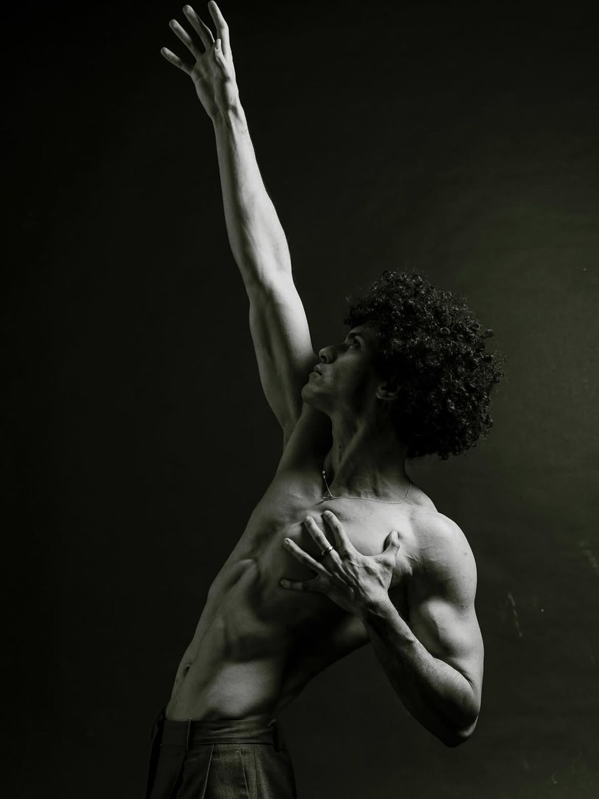
Coach prise de masse · Paris
Prends du muscle. Garde ton style.
J'aide les 18–25 ans à prendre du muscle et à optimiser tout ce qui entoure la prise de masse : entraînement, nutrition, sommeil, régularité.
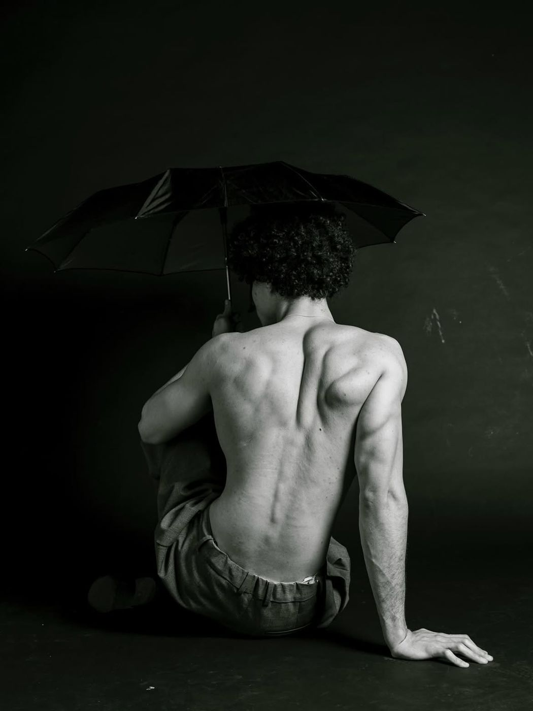
Le manifeste
Le corps n'est pas qu'une question de poids soulevé. C'est une façon de se tenir, de bouger, de s'habiller, de se présenter au monde.
Prendre de la masse quand on est jeune et naturellement fin, c'est frustrant. On mange « beaucoup », on s'entraîne « dur », et rien ne bouge. Le problème est rarement la motivation. C'est la méthode.
Mon approche : des bases scientifiques, un plan simple à suivre, et une régularité qui finit par se voir dans le miroir.
La méthode
Trois piliers,
une seule direction.
-
01
La science
Calories, protéines, volume d'entraînement, surcharge progressive. On part de ce qui est prouvé, pas des tendances TikTok.
-
02
Le mouvement
Un programme que tu peux tenir des mois, pas deux semaines. Des habitudes qui s'installent et qui tiennent quand la motivation baisse.
-
03
La progression
On mesure, on ajuste, on avance. Poids, charges, photos, énergie : chaque semaine te rapproche de ton objectif.
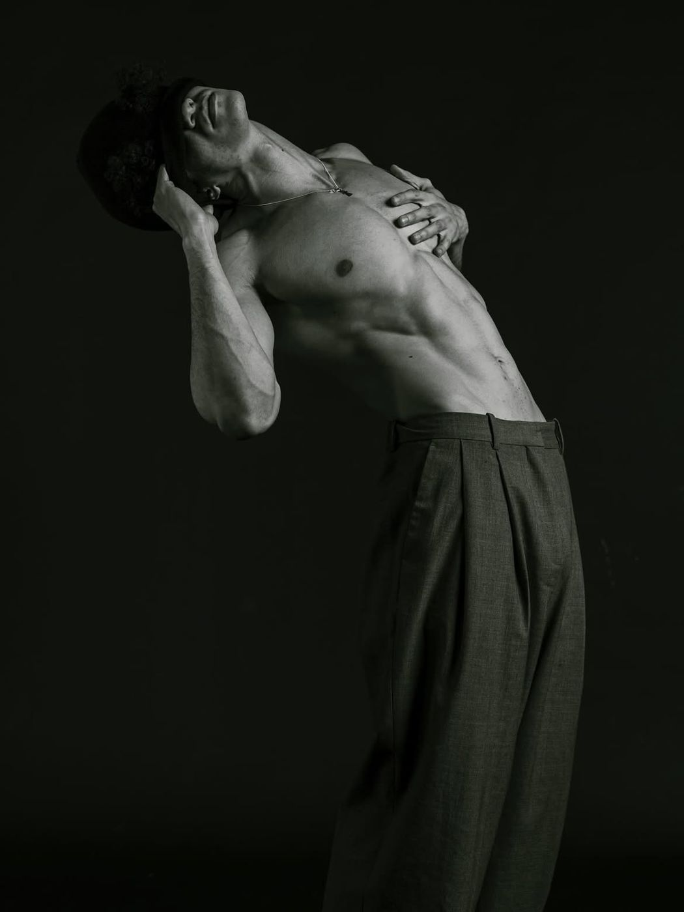
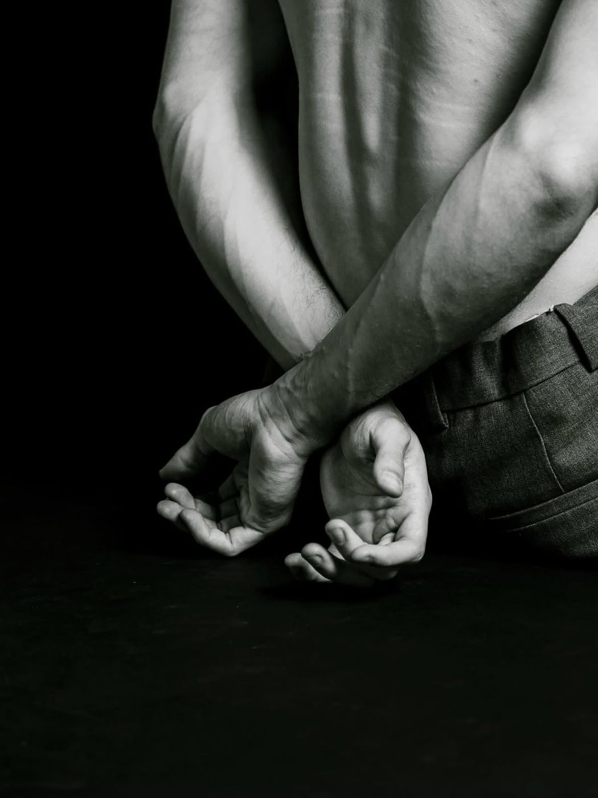
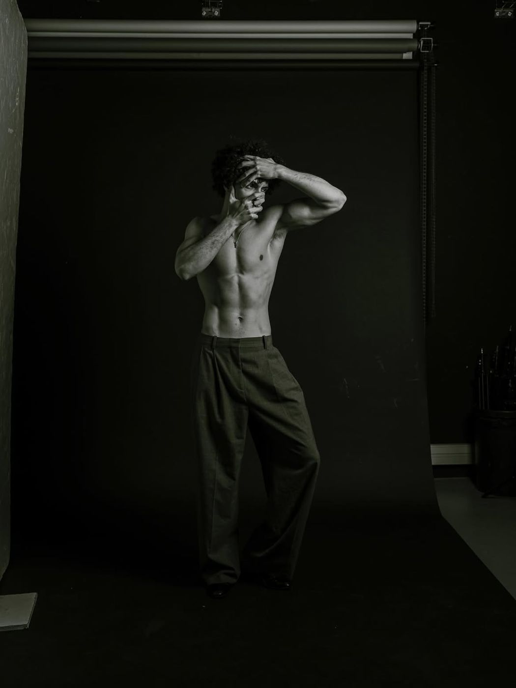
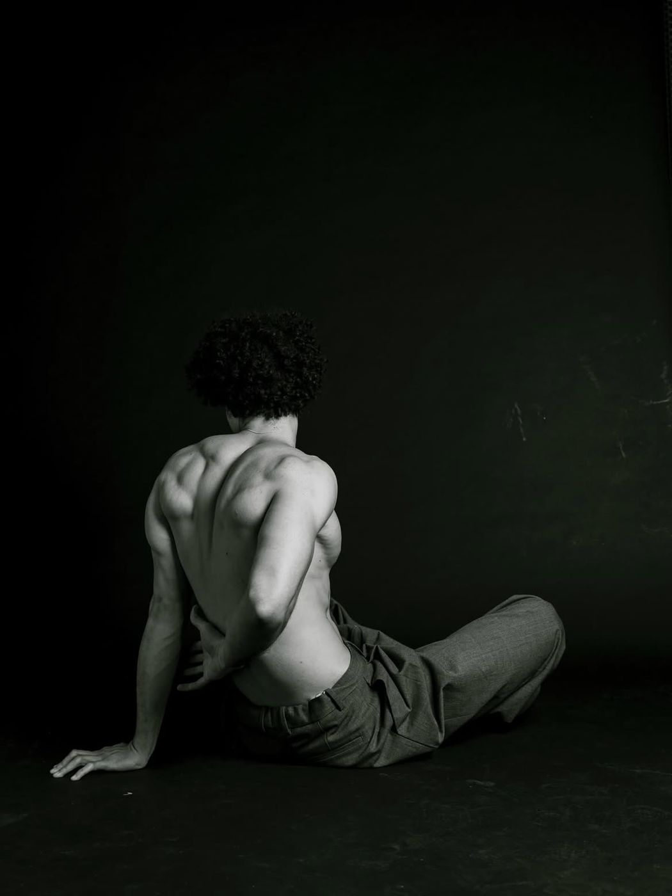
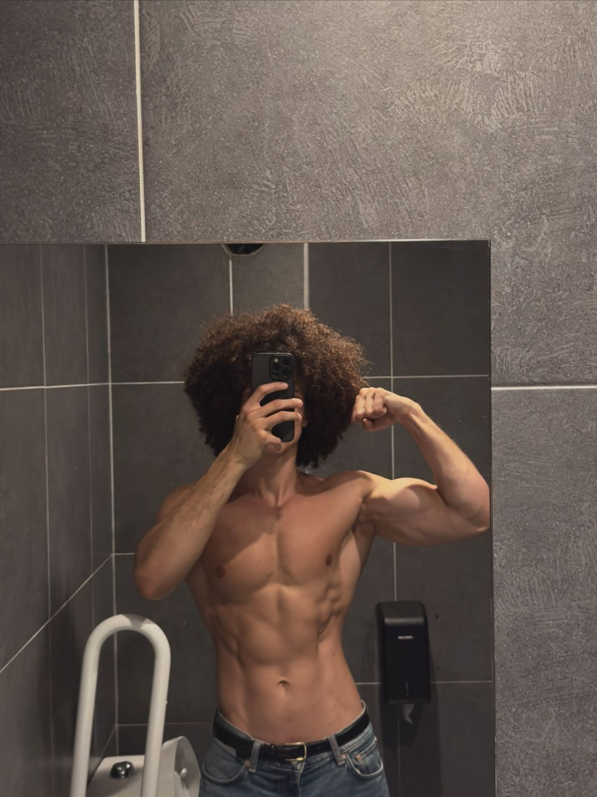
Pour qui ?
Si tu te reconnais,
on doit parler.
- → Tu as entre 18 et 25 ans et tu veux enfin prendre du muscle.
- → Tu es « hardgainer » : tu manges, mais la balance ne bouge pas.
- → Tu t'entraînes déjà mais tu stagnes depuis des mois.
- → Tu débutes et tu veux partir sur de bonnes bases, sans te blesser.
- → Tu veux un physique qui se voit aussi bien en salle qu'en costume.
Ton profil
Qu'est-ce qui te bloque
vraiment ?
Quatre questions, trente secondes. Tu repars avec tes trois priorités.
Le Labo
Combien dois-tu manger
pour prendre du muscle ?
Une estimation rapide de tes besoins en prise de masse. C'est un point de départ ; en coaching, on l'ajuste chaque semaine selon tes résultats.
Calories / jour
2 900kcal
Objectif : +0,7 à 1,3 kg / mois. Si la balance ne bouge pas en 2 semaines, ajoute 150–200 kcal.
Je veux un plan sur mesurePlanche contact
Hors de la salle,
devant l'objectif.
Photos : @roeeeeyy · @eunice.rsl · @prateek_it_is. Clique sur une image pour l'agrandir.
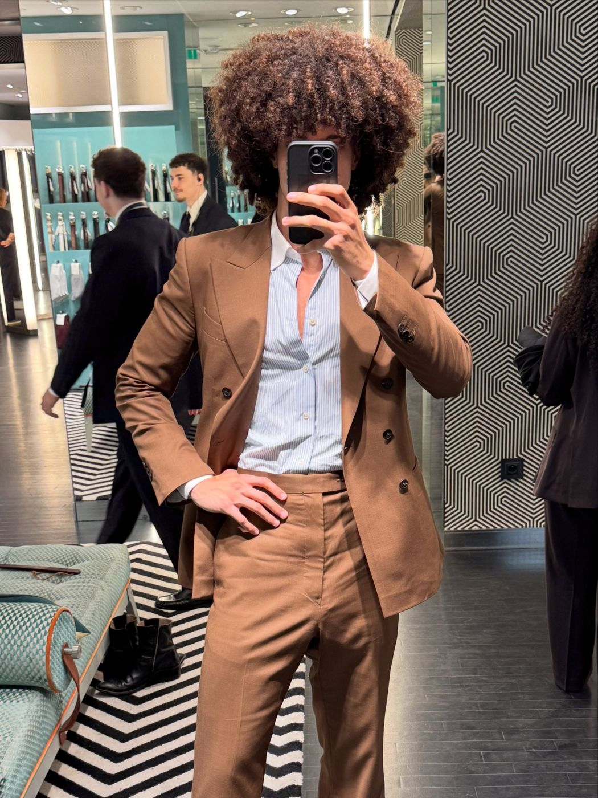
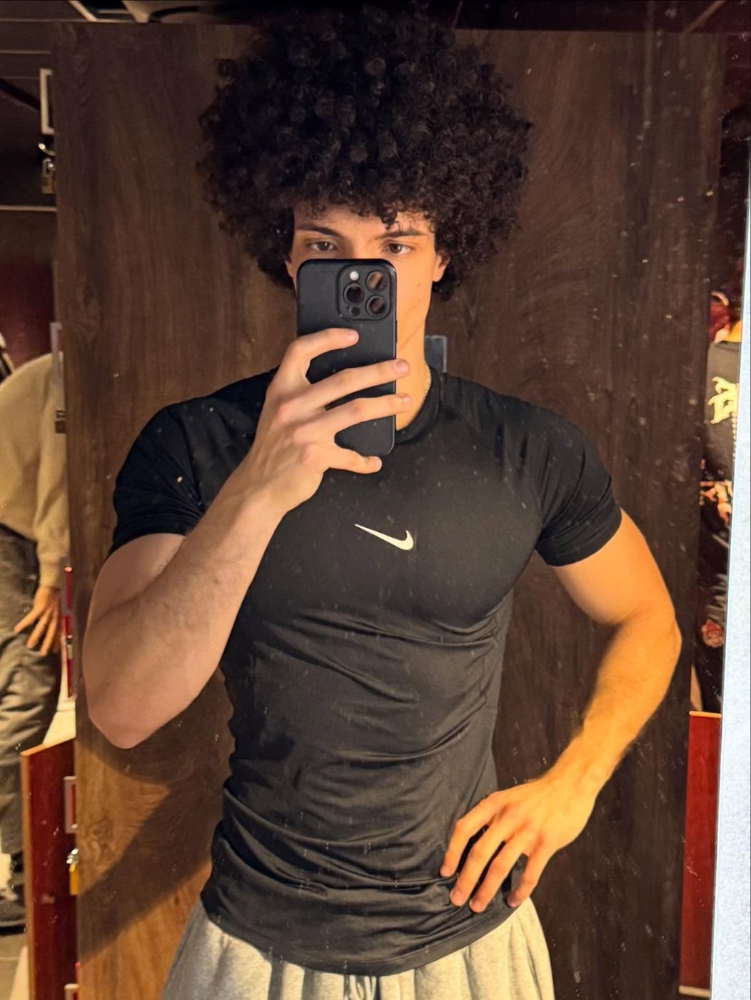
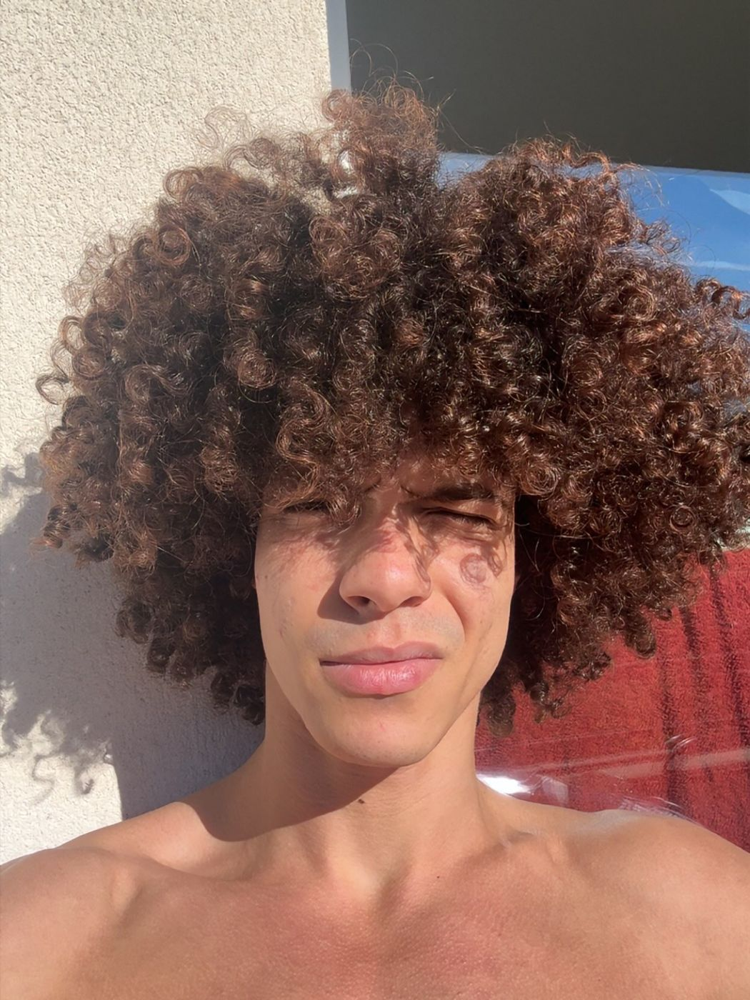
À propos
Mohamed Aydi.
Basé à Paris, entre la salle, les shootings et la mode. J'ai construit mon physique pas à pas, et j'ai appris ce qui marche vraiment pour prendre du muscle quand on part de zéro.
Aujourd'hui, je transmets cette méthode aux 18–25 ans qui veulent un corps fort, un style affirmé et une vraie confiance en eux, avec un suivi honnête et des conseils qui tiennent dans la vraie vie.
Coulisses
Pas de magie.
Des séances.
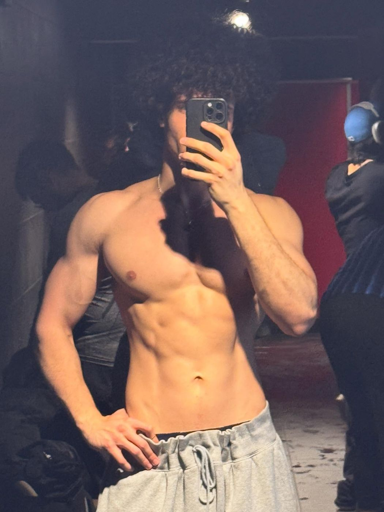
La communauté
Progresse avec
les autres.
Un espace privé sur Skool pour celles et ceux qui veulent prendre du muscle sérieusement : les programmes, les bases de la nutrition, et une équipe qui avance avec toi chaque semaine.
- ProgrammesDes cycles d'entraînement prêts à suivre, du débutant au confirmé.
- NutritionRepas, quantités, budget étudiant : manger assez sans se compliquer la vie.
- Lives & Q&RDes sessions en direct pour poser tes questions et corriger ta technique.
- RégularitéDes défis et un suivi de groupe pour ne plus lâcher au bout de deux semaines.
Bientôt disponible sur Skool
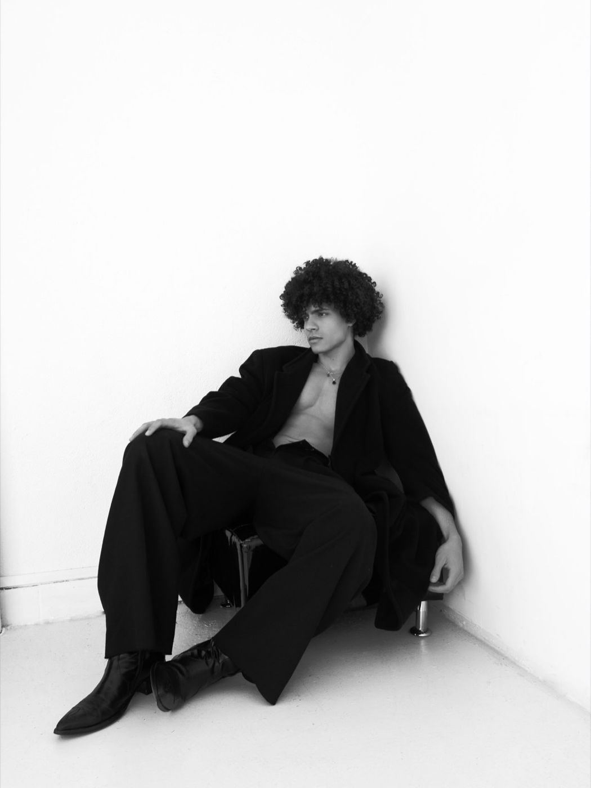
FAQ
Les questions
qu'on me pose.
Je suis très fin. C'est vraiment possible pour moi ?
Oui. Les profils « fins » sont souvent ceux qui progressent le plus vite au début, à condition de manger assez. Le plus souvent, le blocage vient des calories, pas de la génétique.
En combien de temps je vais voir des résultats ?
Les premiers changements (force, énergie, poids sur la balance) arrivent en quelques semaines. Pour que ça se voie vraiment dans le miroir, compte environ trois mois de régularité.
Est-ce que je dois prendre des compléments ?
Ce n'est pas obligatoire. La base, c'est l'alimentation, l'entraînement et le sommeil. Une whey peut aider à atteindre tes protéines, et la créatine est le complément le plus étudié, mais aucun ne remplace le reste.
Je n'ai pas un gros budget pour manger. Comment je fais ?
On construit tes repas avec des aliments simples et bon marché : riz, pâtes, œufs, lait, flocons d'avoine, légumineuses, poulet. Prendre de la masse ne demande pas de produits chers.
Je suis végétarien(ne). C'est compatible ?
Oui. Il faut juste être plus attentif aux sources de protéines (œufs, produits laitiers, tofu, légumineuses) et bien les répartir sur la journée.
Comment se passe l'appel découverte ?
On fait le point sur ton objectif, ton point de départ et ce qui te bloque. Tu repars avec une direction claire, sans engagement.
Premier pas
Réserve ton appel découverte.
On parle de ton objectif, de ton point de départ et de ce qui te bloque. Tu repars avec une direction claire, que tu travailles avec moi ou non.
Le calendrier ne s'affiche pas ? Réserver directement sur Calendly →